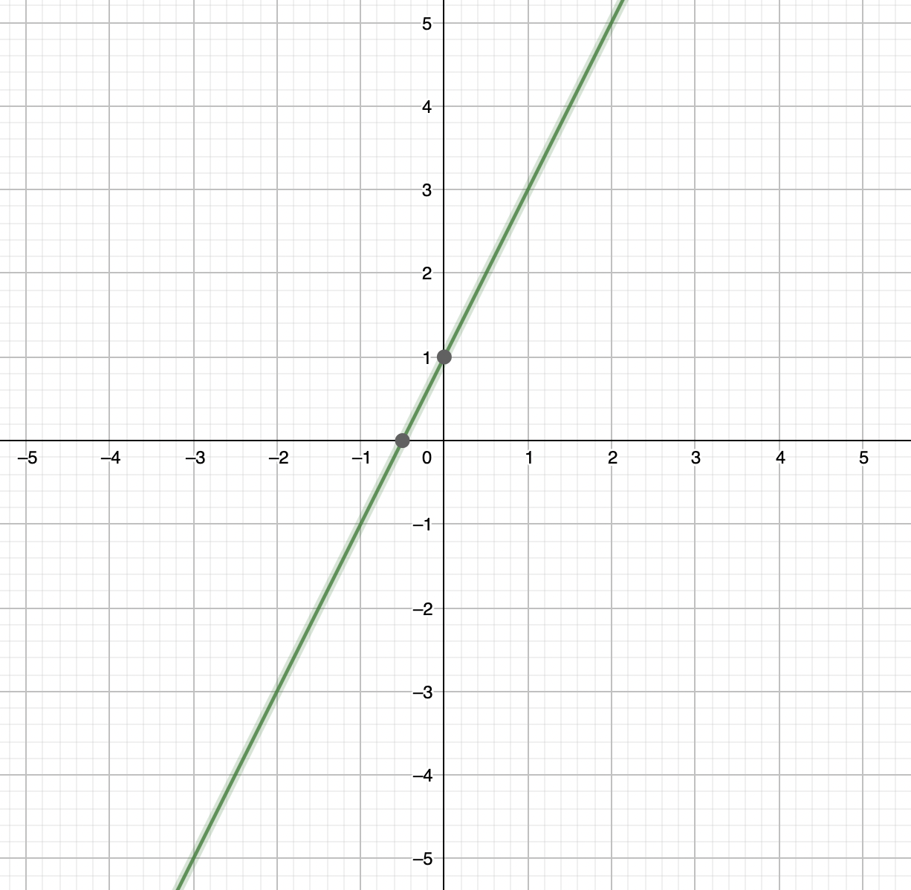
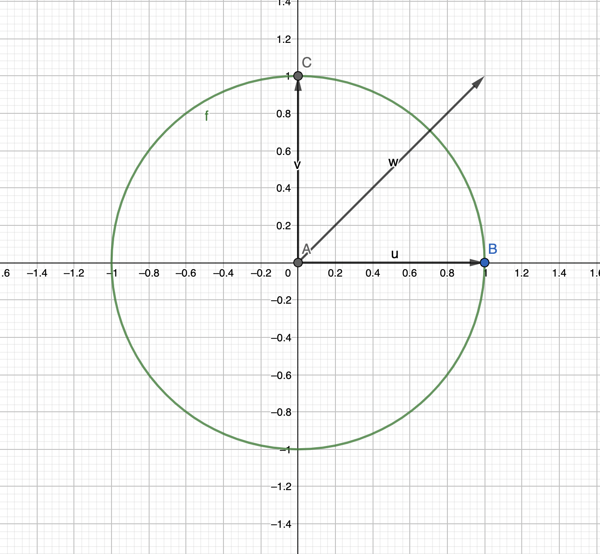

06 Maths Assignment 12th September - 12th to 24th Question
Question 12
Consider a straight line \(y=2x+1\) in \(ℝ^2\), does it form a subspace of \(ℝ^2\)?
No, the straight line doesn’t pass through the origin, which mean any point on the line, when multiplied with \(0\), gives \((0,0)\) which doesn’t lie on the line, not making it a subspace of \(ℝ^2\)

Question 13
Consider a unit circle in \(ℝ^2\), centered at origin, is it a subspace of \(ℝ^2\)?
No, a unit circle in \(ℝ^2\) which is centered at origin, is not a subspace in \(ℝ^2\). Since, two points in the circle, \((0,1)\) and \((1,0)\) when added together, goes beyond the circle.

Question 14
What are all the subspaces of \(ℝ^2\)?
All the subspaces of the vector space \(ℝ^2\) are:
- Origin - \((0,0)\)
- Any Line passing through origin. \(\alpha x = 0\) where \(x\in ℝ^2\) and \(\alpha \in ℝ\)
Question 15
What are all the subspaces of ℝ3?
All the subspaces of the vector space \(ℝ^2\) are:
- Origin - \((0,0)\)
- Any Line passing through the origin. \(\alpha x\) where \(x \in ℝ^3\) and \(\alpha \in ℝ\)
- Any Plane passing through the origin. \(\alpha x + \beta y\) where \(x,y \in ℝ^3\) and \(\alpha, \beta \in ℝ\)
Question 16
Given \(ℝ^3\), pick any two points \(u,v∈ℝ^3\). Note that \({αu+βv | α,β∈ℝ}\) is a subspace of \(ℝ^3\). Generalize this idea!
All the possible linear combinations of two points in \(ℝ^3\) is the linear span which is the subspace of \(ℝ^3\).
Generalizing it, for \(ℝ^n\), we have to prove the linear combinations of \((n-1)\) points in this \(ℝ^n\) is the subspace of \(ℝ^n\)
\(S = \{u_1, u_2, u_3, ...., u_{n-1}\}\)
\(L(S) =\) is all the possible linear combinations of S, which is known as Linear Span of S
Now, we have to prove that \(L(S)\) is a subspace of \(ℝ^n\).
\[ x = \alpha_1 u_1 + \alpha_2 u_2 + \alpha_3 u_3 + ... + \alpha_{n-1} u_{n-1} \]
\[ y = \beta_1 u_1 + \beta_2 u_2 + \beta_3 u_3 + ... + \beta_{n-1} u_{n-1} \]
\[ x,y \in L(S) \]
Now, to prove that \(L(S)\) is a subspace of \(ℝ^n\), we have to prove two following conditions:
\[ x+y = z \in L(S) \]
\[ \lambda x \in L(S) \]
Proof:
\[ x + y = (\alpha_1 u_1 + \beta_1 u_1) + (\alpha_2 u_2 + \beta_2 u_2) + ... + (\alpha_{n-1} u_{n-1} + \beta_{n-1} u_{n-1}) \]
\[ x + y = (\alpha_1 + \beta_1)u_1 + (\alpha_1 + \beta_1)u_2 + ... + (\alpha_{n-1} + \beta_{n-1})u_{n-1} \] Since, \(L(S)\) contains all possible combinations, the above \(x+y \in L(S)\)
\[ \lambda x = \lambda \alpha_1 u_1 + \lambda \alpha_2 u_2 + ... + \lambda \alpha_{n-1} u_{n-1} \] Again, since \(L(S)\) contains all possible combinations, the above \(\lambda x \in L(S)\)
Question 17
The set \({αu+βv|α,β∈ℝ}\) is called the linear combination of vectors \(u\) and \(v\). We can generalize this to \(k\) vectors. Observe what this set is all about?
The entire set when generalized to \(k\) vectors, is the linear span of \(k\) vectors, which is the subspace.
Question 18
We say that a vector \(w\) is manufactured by \(u\) and \(v\) if \(w∈{αu+βv|α,β∈ℝ}\).
Yes, when we do \(w∈{αu+βv|α,β∈ℝ}\), we get all possible vectors in \(ℝ^2\), so we can manufacture any \(w\) by the linear combinations of \(u\) and \(v\)
Question 19
Show that \((1,2,3)\) and \((4,5,6)\) can manufacture \((7,8,9)\). Also \((4,5,6)\) and \((7,8,9)\) can manufacture \((1,2,3)\). Finally \((4,5,6)\) can be manufactured by the other two vectors.
For 1st case \(\alpha = -1\) and \(\beta = 2\)
For 2nd case \(\alpha = 2\) and \(\beta = -1\)
For 3rd case \(\alpha = 1/2\) and \(\beta = 1/2\)
Question 20
Can \((2,1,0)\) and \((3,0,8)\) manufacture \((1,1,1)\) ?
No, since we have inconsistent system, where \[ 2x + 3y = 1 \]
\[ x = 1 \]
\[ 8y = 1 \]
All the three equations doesn’t satisfy simultaneously.
Question 21
Can \((0,0,1)\) and \((0,1,0)\) manufacture \((1,0,0)\)?
No, since \((0,0,1)\) and \((0,1,0)\) is the \(yz\) plane, we can never get \((1,0,0)\)
Question 22
When can two vectors in \(ℝ^3\) manufacture a given third vector?
If we have the third vector in the span of the first two vector, it can be manufactured.
Question 23
When can two vectors in \(ℝ^3\) fail to manufacture a given third vector?
If the third vector doesn’t lie in the span of the first two vectors, it can’t be manufactured
Question 24
If \(\{u,v,w\}\) are such that a vector in this set can be manufactured by some vectors in the same set, then such a set is called a linearly dependent set.
Yes, since one vector is the combination of the other vectors, and add NO extra value, which means it is dependent on other vectors, hence the set is linearly dependent set